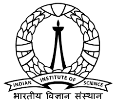
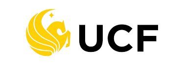
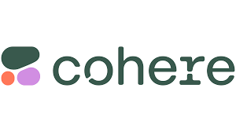
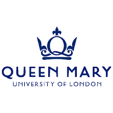
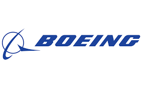

Ashish Vashist
Pre-Doctoral Researcher, Indian Institute of Science
Hello, I am Ash. I am currently a Pre-Doc Researcher at the Indian Institute of Science, Bangalore, where I work on vision–language models and Sim2Real systems under Prof. Suresh Sundaram. My current projects include developing robust object detection systems for safety-critical aerospace applications in collaboration with Boeing, and building reasoning-based VLMs for atmospheric turbulence mitigation.
In addition to my work at IISc, I am collaborating with Prof. Shruti Vyas at University of Central Florida on geographic domain shift and with Cohere for AI Community on generalized vision–language–action models for embodied AI.
I founded CORD.ai because I kept seeing talented students asking "How do I get into research?" online. They were smart people who just needed guidance and access, so I created a community where students could learn research by doing it together, connecting underserved students with researchers at top institutions worldwide.
Previously, I worked at Carnegie Mellon University with Prof. Min Xu on 3D cryo-electron tomography. During my undergraduate, I also worked at the National University of Singapore with Prof. Luo Wei, Birla Institute of Technology, Indian Institute of Information Technology Allahabad, and Deep Forest Sciences as part of my Google Summer of Code project.
When I am not working on research, you will find me at the swimming pool, listening to business podcasts, learning new languages, or defending why Rohit Sharma's pull shot is the most elegant thing cricket has ever produced.
I'd love to chat about AI or collaborate on projects, so feel free to reach out for a virtual coffee chat!






Contact
Email: ashishvashist2002@gmail.com
GitHub: Ash-29
LinkedIn: ashish-vashist
X: @v_ashish29
Google Scholar: Profile